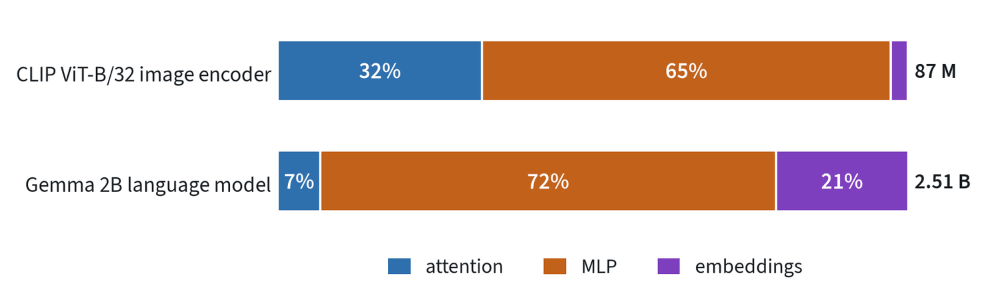

Everything becomes tokens
A transformer does not read words or pixels. It reads one sequence of vectors, called tokens, and the first job of any model is to turn its input into that sequence.

Text is split into sub-word pieces, and each piece is looked up in a table of learned vectors. An image is cut into a grid of small patches, for example 16 by 16 pixels, and each patch is flattened and projected to a vector. A 224-pixel image cut this way gives 14 × 14 = 196 tokens. Video adds a time axis. Robot joint angles and actions are either sorted into numbered bins, so they look like words, or projected directly as continuous vectors.
After this step the model neither knows nor cares where a token came from. That indifference is the reason one architecture now serves language, vision and robot control.
Attention: every token looks at every other token
Attention is how a token gathers the context it needs. Each token produces three vectors: a query (what am I looking for?), a key (what do I contain?) and a value (what do I pass on?). A token’s query is compared with every key. The scores go through a softmax, so they become weights that sum to one, and the token’s new vector is the weighted sum of the values.

Read the last row of the grid. The token “cup” puts most of its weight on “red” and “pick”, so its updated vector now means something like “the red cup that is to be picked”. A model runs several of these in parallel, called heads, so that different heads can follow different relationships.
Self-attention relates tokens within one sequence. Cross-attention lets one sequence read another, for example action tokens reading image features. The cost of attention grows with the square of the sequence length, which is why video and long robot histories are expensive.
Inside one block

A transformer is the same block repeated many times. Each block has two parts. The attention sub-layer moves information between tokens. The MLP sub-layer is a small network applied to each token on its own, and it holds most of the model’s parameters.
Each sub-layer first normalises its input and then adds its output back to that input. The addition is the residual connection: it gives gradients a direct path to the early layers, which is what allows very deep stacks to train.
Attention on its own has no sense of order, so position has to be injected. Most current models use rotary position encoding, which rotates the query and key vectors by an angle that depends on position, so attention can reason about how far apart two tokens are.
One block in equations
Let hold tokens of width . A block in the now-standard pre-normalisation form is two residual updates:
The MLP acts on each token separately. It widens the token to , usually , applies a non-linearity and narrows it back:
Current language models often use a gated variant, , with three matrices. The original transformer normalised after each sub-layer. Normalising before it, as above, keeps the residual path clean and is what lets hundreds of layers train without a delicate warmup.
After the last block a final normalisation and a linear layer map each token to scores over the vocabulary. Usually that linear layer shares its weights with the input embedding table.
Where the parameters are
The attention sub-layer has four matrices: query, key, value and output. The MLP has two of size . With , one block has about
For a vision transformer with and that predicts 85 million, and the real model has 87 million. Two thirds of every such block is MLP.


The language model in the figure pushes this further: it has 18 layers of width 2,048 with an MLP width of 16,384, eight times the token width, and its eight query heads share a single key and value head. Attention is 7% of its parameters. This is the general pattern: attention decides where information moves, and the MLPs, where most of the weights sit, are where it is stored and transformed.
Two rules of thumb follow. Compute per token is about two floating-point operations per parameter, so cost scales with parameters times tokens, plus the attention term that grows with the square of the sequence. And when generating, each token stores its keys and values at every layer. For this language model that is 18 layers × 2 × 256 numbers per token, about 18 kilobytes at 16-bit precision, or 18 megabytes for a thousand-token context.
Three shapes, and how they are made fast
| Shape | What a token can see | Good at | Where it is used |
|---|---|---|---|
| Encoder | All tokens, in both directions | Understanding an input | Vision encoders, embeddings, classifiers |
| Decoder | Only earlier tokens | Generating a sequence step by step | Language models, vision-language models |
| Encoder-decoder | The decoder also reads the encoder’s output | Mapping one sequence to another | Translation, some action policies |
When a decoder generates, the keys and values of earlier tokens do not change, so they are stored and reused. This is the KV cache, and it is why producing the next token is far cheaper than reprocessing the whole prompt. Robot policies lean on the same idea: a large model encodes the camera images once, and a small action network reuses that result many times. The note on robot policies picks this up.
Common mistakes
- Forgetting position. Without position information a transformer treats its input as an unordered set.
- Reading attention maps as explanations. They show where weight went, which is a hint about the model’s reasoning and not a proof.
- Ignoring the quadratic cost. Doubling image resolution gives four times the tokens and about sixteen times the attention cost.
Terms
- Token
- One unit of input, represented as a vector.
- Embedding
- The vector a token is mapped to.
- Head
- One of several attention computations run in parallel.
- Context length
- The most tokens the model can read at once.
- Pre-normalisation
- Applying normalisation at the input of each sub-layer, leaving the residual path untouched.
- Weight tying
- Using the same matrix for the input embedding and the output layer.